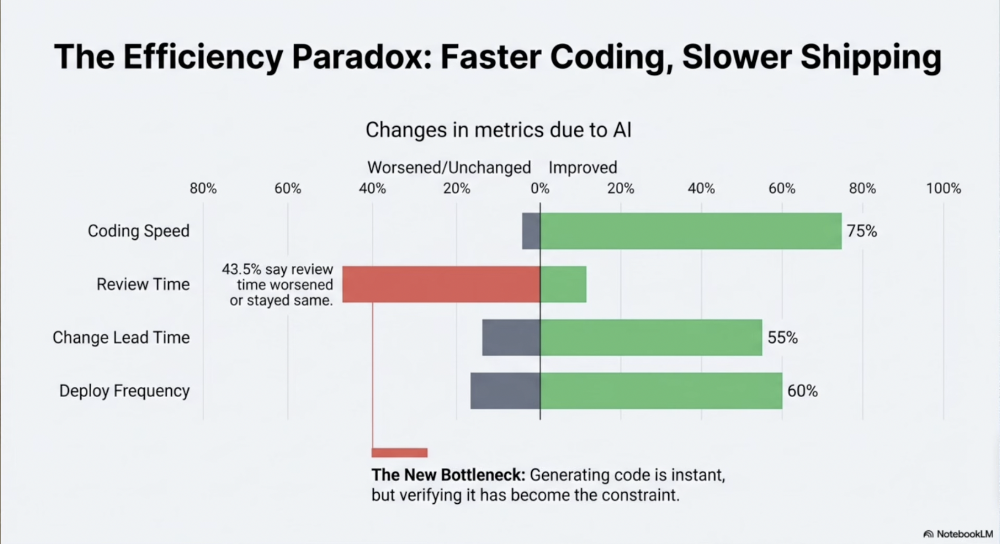

Between learning to code and working with real codebases, there's a gap.
Warm, not dramatic. "Most of us have felt it. You learn the language, you do the exercises — and then you open a real project and it's a completely different experience."
57%
of CS students experience frequent imposter syndrome
ACM SIGCSE 2020, n = 200+
Developers search Reddit and Google before asking a teammate — not because it's faster, but because asking feels risky.
"This isn't just feelings — it's measured. More than half. And the way people cope is they search privately, because asking a colleague means admitting what you don't know."
I've been a software engineer for 6 years.
I've been the confused junior twice.
I wanted to understand why this gap is so hard to close — so I spent months in Reddit threads, Hacker News, interviews, and developer surveys studying what developers actually experience.
"Twice — once at my first job, and again when I switched domains. Both times it felt like starting over. I wanted to understand why."
AI makes this more complicated, not less
Anthropic's 2026 study: developers using AI scored 17% lower on comprehension tests than those coding by hand.
But employers want faster onboarding and faster shipping. Direct conflict.
Anthropic 2026, N = 52, Cohen's d = 0.74, p = 0.01
"This is the real tension. Companies want speed. But when juniors rely on AI, they don't build the understanding they need. The skills don't form. And everyone knows it — developers themselves say 'the biggest challenge is keeping your brains from rotting.'"

Coding is faster. But verifying, reviewing, and understanding has become the constraint.
"75% say coding speed improved with AI. But look at review time — 43% say it worsened or stayed the same. Generating code is instant now. The bottleneck moved to the human part — understanding what the code does, reviewing it, taking responsibility for it."
But research also found what works
−17%
Plain AI chatbot (just answers questions) → exam scores dropped
+127%
Scaffolded AI (guides, hints, doesn't just answer) → practice gains, no exam loss
g = 0.50
Retrieval practice (quizzing yourself) — one of the strongest effects in learning research
Bastani et al., PNAS 2025, N ≈ 1,000 | Rowland 2014 meta-analysis
"This is a 1,000-student randomized trial. Plain ChatGPT — just ask and get answers — made students worse on exams. But when the AI was designed to guide and scaffold — give hints, not answers — learning was preserved. And retrieval practice, quizzing yourself, is one of the most replicated findings in all of learning science."
People want mastery,
not to be AI operators.
Human understanding is still valued — by people themselves and by organizations. There's a bottleneck in code review, debugging, and taking responsibility that requires real comprehension.
"This came through clearly in the research. Developers at every level said the same thing in different words. Juniors want to feel like real engineers. Seniors want people on their team who can actually reason about the code. Nobody wants to just be an AI operator."
So I built a prototype grounded in this research.
Active learning, scaffolded AI, retrieval practice — applied to learning real code.
"Active learning from math circles and tutoring research. Scaffolded AI from the education studies. Retrieval practice from decades of cognitive science. Let me show you what this looks like."
live demo
codeprobe
switch to the app →
Switch to prototype. Walk through: see code → seed questions → type a question → start → show the tutor quizzing back. ~2 min. The key moment: the tool challenges you, not just explains.
Asking for help has social costs — developers avoid it to not look incompetent
↓
Make learning private and judgment-free
"The research showed that people avoid asking because it exposes what they don't know. So the learning space has to be private. No one's watching. You can ask anything."
Plain AI worsened learning — only scaffolded AI improved it
↓
Answer your curiosity, then quiz you back — instead of overloading you with information
"This is straight from the research. If the AI just answers, you don't retain. If it guides you, addresses what you're curious about, and then asks you to think — that's where the learning happens."
46% of developers don't trust AI output — it's confidently wrong
↓
The real code is always visible — the source of truth, not the AI
"If almost half of developers don't trust what AI says, you can't build a learning tool where the AI is the only thing you see. The actual code has to be right there, always."
Where this could go
Organizations could craft lesson series around their own architecture — to teach new engineers their specific codebase and principles.
Active learning means you prove to yourself that you understand. That builds skills and confidence together.
"This started as a tool for students, but I ended up using it myself to learn Rust and refresh C++. The real potential is for organizations — imagine onboarding lessons built around your actual codebase, where new engineers don't just read docs but actually work through the code and prove they get it."
Even in the AI era, human mastery becomes more valuable.
And we can get there.
Let this land. Then: "I'd love to hear what you think."
codeprobe
learn by being challenged, not by being told
Q&A / reactions.
← → arrow keys to navigate